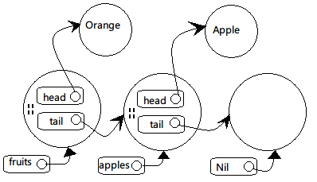

列表不是Scala语言的内建结构，而是定义在Scala包中的List抽象类。它有一个子类
::和一个子对象Nil。
本节的目的是实现一个简化的List实现：
package scala
abstract class List[+T] { ... }
作为一个抽象类List不能用像new List这样的空构造器构建，由类型参数[+T]表明
列表是协变的。
scala> val xs = List(1, 2, 3) xs: List[Int] = List(1, 2, 3) scala> var ys: List[Any] = xs ys: List[Any] = List(1, 2, 3)
实现的目标要有以下三个功能：
def isEmpty: Boolean
def head: T
def tail: List[T]
这三个方法在List类中是抽象的，被定义在Nil和::中。
Nil对象继承自List[Nothing]，它定义了空列表。因为协变的作为它可以兼容任何类型
的List实例：
case object Nil extends List[Nothing] {
override def isEmpty = true
def head: Nothing =
throw new NoSuchElementException("head of empty list")
def tail: List[Nothing] =
throw new NoSuchElementException("tail of empty list")
}
成员方法head的实现方法是抛出异常，因为对于成员类型Nothing来说，返回结果必须
是Nothing，而Nothing是个根本不存在的类型，所以它无法正常返回结果，只能抛出
异常。
::类读作“cons”，意思是“构造”，它实现了非空列表。“使用列表”这一章中“列表模式”里
说过模式中的每个中缀调用被作为构造器调用。
是对类::的构造器调用::(x, xs)`。
final case class ::[T](hd: T, tl: List[T]) extends List[T] {
def head = hd
def tail = tl
override def isEmpty: Boolean = false
}
hd是头一个元素，tl是其他的所有元素。上面的代码可以简化，直接由参数实现超类
List的head和tail方法：
final case class ::[T](head: T, tail: List[T])
extends List[T] {
override def isEmpty: Boolean = false
}
def length: Int =
if (isEmpty) 0 else 1 + tail.length
def drop(n: Int): List[T] =
if (isEmpty) Nil
else if (n <= 0) this
else tail.drop(n - 1)
def map[U](f: T => U): List[U] =
if (isEmpty) Nil
else f(head) :: tail.map(f)
::和:::都是绑定在右操作数上的。即，`x
xs.::(x)。因为x是列表元素可以是任意类型，所以不能假设它正好是具有::方法的
类型。也由于这个原因::方法应该生成一个新的列表。
还有值得讨论的地方是新加入元素的类型。思维惯性上会认为和列表元素是同一类型，但 实际上可用的范围更大。以下面的层级关系为例：
abstract class Fruit class Apple extends Fruit class Orange extends Fruit scala> val apples = new Apple :: Nil apples: List[Apple] = List(Apple@585fa9) scala> val fruits = new Orange :: apples fruits: List[Fruit] = List(Orange@cd6798, Apple@585fa9)
上面的例子说明新加入的元素可以产生超类类型的列表。实现这样弹性的::方法：
def ::[U >: T](x: U): List[U] = new scala.::(x, this)
注意方法本身是多态的，类型参数是U，添加的元素类型必须是U，返回结果类型是
List[U]。而[U >: T]限定列表元素T的超类。
结合前面的例子，U被实例化为Fruit。因为List[Apple]中的Apple是Fruit的
子类，于是U的下界被满足。

实际上对带有下界的T定义不只是为了方便，更加是为类型正确。因为List是协变的，
如果用下面的形式：
// Error def ::(x: T): List[T] = new scala.::(x, this)
因为方法参数被认为是逆变位置，所以上面的列表元素类型T处于逆变位置。这样List
就不能被声明为T保持协变了。所以使用下界[U >: T]，即加强了类型检查，又让使用
更加有弹性。
连接列表的实现方法差不多：
def :::[U >: T](prefix: List[U]): List[U] =
if (prefix.isEmpty) this
else prefix.head :: prefix.tail ::: this
因为::与:::是右关联的，所以下面四个语句其实相等：
prefix.head :: prefix.tail ::: this prefix.head :: (prefix.tail ::: this) (prefix.tail ::: this).::(prefix.head) this.:::(prefix.tail).::(prefix.head)
列表的典型访问模式是递归，比如有一个让列表所有元素自加1的方法：
def incAll(xs: List[Int]): List[Int] = xs match {
case List() => List()
case x :: xs1 => x + 1 :: incAll(xs1)
}
这个方法有个问题：incAll是在::运算里面的，不是尾递归，堆栈的爆掉的危险。所以
要换个用循环的方案：
for (x <- xs) // ??
那循环体内怎么写？前面的incAll递归方案可以通过加前缀操作；循环只能通过加后缀，
但:::操作时间与第一个列表长度成正比，效率很差：
var result = List[Int]() // a very inefficient approach for (x <- xs) result = result ::: List(x + 1) result
较好的办法是使用列表缓冲（list buffer）收集元素，最后用toList方法一次转换为
列表。
类ListBuffer位于scala.collection.mutable包中，而且它经过优化的增减操作与
toList操作都只要很短的常量时间就可以完成：
import scala.collection.mutable.ListBuffer val buf = new ListBuffer[Int] for (x <- xs) buf += x + 1 buf.toList
虽然我们自己实现的List类很简洁，但实际上在遍历列表时为了避免递归一般都使用列表
缓冲与循环结合的方式。比如真正的List类是这样实现map方法的：
final override def map[U](f: T => U): List[U] = {
val b = new ListBuffer[U]
var these = this
while (!these.isEmpty) {
b += f(these.head)
these = these.tail
}
b.toList
}
看了以上的代码后，大家可能会对最后b.toList的效率感兴趣。实际上它的效率与列表的
长度无关。关于原因可以看一下::类的实现：
final case class ::[U](hd: U,
private[scala] var tl: List[U]) extends List[U] {
def head = hd
def tail = tl
override def isEmpty: Boolean = false
}
可以看到参数tl的类型是var，所以列表除了头一个元素以下的部分还是可以改变的。
而且修饰符private[scala]限定只有scala包中可以访问它。而修改它的是
scala.collection.mutable中的ListBuffer。
ListBuffer的元素被表示为列表，而添加新元素操作只对列表中最后一个::单元的t1
字段修改：
package scala.collection.immutable
final class ListBuffer[T] extends Buffer[T] {
private var start: List[T] = Nil // 所有元素的列表
private var last0: ::[T] = _ // 最后一个 '::' 成员
private var exported: Boolean = false // 是否执行过toList操作
toList方法的实现也很简单。它返回由start指向的列表，如果列表非空，就设置
exported为true：
override def toList: List[T] = {
exported = !start.isEmpty
start
}
toList返回的列表应该是不可变的实例。那如果在这以后又被添加了元素的话，就不得不
改变start指向的列表。所以为了维护正确性，由+=方法转向对一个新列表进行操作：
override def += (x: T) {
if (exported) copy()
if (start.isEmpty) {
last0 = new scala.::(x, Nil)
start = last0
} else {
val last1 = last0
last0 = new scala.::(x, Nil)
last1.tl = last0
}
}
上面的逻辑中可以看出，如果没有被toList过，还可以在原来的列表上修改。如果已经
生成过列表了，那复制操作就不可避免。
回顾本章的内容可以感受到：指使式方案可以避免重复复制以提高效率；函数式风格以不可 改变与不共享数据让程序变得更加可靠。
Scala官方的实现方式让程序在外部看来是函数式，而内部实现在不得已的情况下使用 指令式实现。这样的实现可以被称作“外在函数式风格”。
先讨论一个例子，Person类有名字，性别，孩子三个成员：
case class Person(name: String, isMale: Boolean, children: Person*)
根据这个类建立一些实例：
val lara = Person("Lara", false)
val bob = Person("Bob", true)
val julie = Person("Julie", false, lara, bob)
val persons = List(lara, bob, julie)
如果要找出所有母亲与孩子的结对，方案一是使用map、flatMap和filter这样的高阶
函数组成这样的查询操作：
scala> persons filter (p => !p.isMale) flatMap (p =>
| (p.children map (c => (p.name, c.name))))
res5: List[(String, String)] = List((Julie,Lara),
(Julie,Bob))
上面的代码很看起来挺难理解的，用for表达式来实现另一个版本：
scala> for (p <- persons; if !p.isMale; c <- p.children)
| yield (p.name, c.name)
res6: List[(String, String)] = List((Julie,Lara),
(Julie,Bob))
for循环比高阶函数可读性更加好一些。但实际上Scala编译器把循环版本转为高阶函数版本 ：
yield结果的for表达式会被转为map、flatMap与filter组合的调用。
yield结果的for表达式被转为filter与foreach的调用。
for表达式的一般形式：
for ( seq ) yield expr
其中的seq部分由生成器、定义、过滤器组成，以分号分隔：
for (p <- persons; n = p.name; if (n startsWith "To")) yield n
小括号可以由大括号代替，并且在用大括号的情况下还能省略分号：
for {
p <- persons // 生成器
n = p.name // 定义
if (n startsWith "To") // 过滤器
} yield n
如果有多个生成器，后面的生成器在内层的循环：
scala> for (x <- List(1, 2); y <- List("one", "two"))
| yield (x, y)
res0: List[(Int, java.lang.String)] =
List((1,one), (1,two), (2,one), (2,two))
8皇后问题：标准棋盘上放8个皇后，相互之间不能处理叫吃的位置上（同行、同列、 同对角线）。
对于这个问题，把它扩展为任意尺寸的棋盘：在N*N的棋盘上放N个皇后，反而更加简单。设 左上角的坐标是(1,1)，右下角是(N,N)。
定义好了问题以后再看解决方案：
同一行的会被叫吃，所以每行只能放一个。那就一行一行地放皇后并检查会不会被叫吃。在
处理过程中还会遇到第K行的皇后把从1到k-1行的皇后全都叫吃的局面，这时就要放弃
这部分操作继续另外一种从1到k-1行皇后的配置方案。
另外一个方案更加具有函数式风格：
穷举出所有在N*N棋盘上放k个皇后的方案0<k<N。那么每个方案都可以用长度的k的
列表表示，为了处理方便顺序要按堆栈的方式把第k行在最顶层，k-1到k行依次向下。
所有的堆栈在一起组成了所有解决方案的列表。
现在我们把在第k+1行放皇后的操作变为对前一个方案多加一个皇后的所有可能的扩展。
这会产一个长度为k+1的列表。
下面的placeQueens函数实现了这一算法：
def queens(n: Int): List[List[(Int, Int)]] = {
def placeQueens(k: Int): List[List[(Int, Int)]] =
if (k == 0)
List(List())
else
for {
queens <- placeQueens(k - 1)
column <- 1 to n
queen = (k, column)
if isSafe(queen, queens)
} yield queen :: queens
placeQueens(n)
}
两个生成器：
queens <- placeQueens(k - 1)遍历所有行（递归调用）。
column <- 1 to n遍历所有列。
过滤器来检查有没有叫吃情况发生：
def isSafe(queen: (Int, Int), queens: List[(Int, Int)]) =
queens forall (q => !inCheck(queen, q))
def inCheck(q1: (Int, Int), q2: (Int, Int)) =
q1._1 == q2._1 || // 同一行
q1._2 == q2._2 || // 同一列
(q1._1 - q2._1).abs == (q1._2 - q2._2).abs // 对角线
模拟一个查找图书的应用：
case class Book(title: String, authors: String*)
val books: List[Book] =
List(
Book(
"Structure and Interpretation of Computer Programs",
"Abelson, Harold", "Sussman, Gerald J."
),
Book(
"Principles of Compiler Design",
"Aho, Alfred", "Ullman, Jeffrey"
),
Book(
"Programming in Modula-2",
"Wirth, Niklaus"
),
Book(
"Elements of ML Programming",
"Ullman, Jeffrey"
),
Book(
"The Java Language Specification", "Gosling, James",
"Joy, Bill", "Steele, Guy", "Bracha, Gilad"
)
)
查找作者姓“Gosling”的书名：
scala> for (b <- books; a <- b.authors
| if a startsWith "Gosling")
| yield b.title
res0: List[String] = List(The Java Language Specification)
查找书名含“Program”：
scala> for (b <- books if (b.title indexOf "Program") >= 0)
| yield b.title
res4: List[String] = List(Structure and Interpretation of
Computer Programs, Programming in Modula-2, Elements
of ML Programming)
查找编写了两本书以上的作者：
scala> for (b1 <- books; b2 <- books if b1 != b2;
| a1 <- b1.authors; a2 <- b2.authors if a1 == a2)
| yield a1
res5: List[String] = List(Ullman, Jeffrey, Ullman, Jeffrey)
上面的代码有缺陷，同一个作者会出现多次。下面的代码完成去重：
scala> def removeDuplicates[A](xs: List[A]): List[A] = {
| if (xs.isEmpty) xs
| else
| xs.head :: removeDuplicates(
| xs.tail filter (x => x != xs.head)
| )
| }
removeDuplicates: [A](List[A])List[A]
scala> removeDuplicates(res5)
res6: List[java.lang.String] = List(Ullman, Jeffrey)
最后一个表达式可以使用for表达式表现为：
xs.head :: removeDuplicates(
for (x <- xs.tail if x != xs.head) yield x
)
每个for表达式都可以换成map、flatMap、filter这三个高阶的形式表达。
x <- exp1这种生成器生成到简单变量的情况下，大概有三种情况。
for (x <- exp1) yield exp2
相当于：
exp1 .map(x => exp2)
for (x <- exp1 if exp2) yield exp3
相当于：
for (x <- exp1 filter(x => exp2)) yield exp3
相当于：
exp1 filter (x => exp2) map (x => exp3)
如果过滤器后有更多的元素同理。设seq为任意序列生成器、定义或过滤器，则：
for (x <- exp1 if exp2 ; seq) yield exp3
相当于：
for (x <- exp1 filter exp2 ; seq) yield exp3
for (x <- exp1 ; y <- exp2 ; seq) yield exp3
设seq为任意序列生成器、定义或过滤器。则相当于flatMap的应用：
exp1 .flatMap(x => for (y <- exp2 ; seq) yield exp3)
组合上面三种情况来处理“找出所有出版过至少两本书的作者”：
for (b1 <- books; b2 <- books if b1 != b2;
a1 <- b1.authors; a2 <- b2.authors if a1 == a2)
yield a1
相当于：
books flatMap (b1 =>
books filter (b2 => b1 != b2) flatMap (b2 =>
b1.authors flatMap (a1 =>
b2.authors filter (a2 => a1 == a2) map (a2 =>
a1))))
如果生成器不是x <- expq这样生成到简单变量x的情况。转译起来就麻烦了。
这种情况还简单，看起来像变量差不多。
for ((x1, ..., xn) <- exp1) yield exp2
相当于：
exp1 .map { case(x1, ..., xn) => exp2 }
单个模式匹配的情况下：
for (pat <- exp1) yield exp2
相当于：
exp1 filter {
case pat => true
case _ => false
} map {
case pat => exp2
}
基本思路是只有匹配于pat的情况才会被映射，所以也保证了模式匹配不会抛出
MatchError。
注意这只在单个模式匹配的情况下讨论。其他的情况参考Scala语言规格书“Ode08”。
for (x <- exp1; y = exp2; seq) yield exp3
设seq为任意序列生成器、定义或过滤器。上面相当于：
for((x,y) <- for (x <- exp1) yield (x, exp2); seq) yield exp3
因为exp2用到了x所以每次产x的时候exp2要重新计算。这样浪费了性能，所以：
for (x <- 1 to 1000; y = expensiveComputationNotInvolvingX) yield x * y
更好的写法是：
val y = expensiveComputationNotInvolvingX for (x <- 1 to 1000) yield x * y
前面描述了通过yield生成值的情况。在不产值的情况下一般更简单，只要foreach：
for (x <- exp1) body
相当于：
exp1 foreach (x => body)
更加复杂的情况：
for (x <- exp1 ; if exp2 ; y <- exp3) body
相当于：
exp1 filter (x => exp2) foreach ( x => exp3 foreach (y => body) )
例子，把列表形式的矩阵所有元素累加在一起：
var sum = 0 for (xs <- xss; x <- xs) sum += x
相当于：
var sum = 0
xss foreach (xs =>
xs foreach (x =>
sum += x))
下面的三个函数是用for循环分别实现map、flatMap、filter的演示：
object Demo {
def map[A, B](xs: List[A], f: A => B): List[B] =
for (x <- xs) yield f(x)
def flatMap[A, B](xs: List[A], f: A => List[B]): List[B] =
for (x <- xs; y <- f(x)) yield y
def filter[A](xs: List[A], p: A => Boolean): List[A] =
for (x <- xs if p(x)) yield x
}
for表达式的实现是基于map、flatMap、filter这些高阶函数。所以可以把for用在
大批量数据上。for可以应用在数组和列表上也是因为这些这两个数组结构实现了这三个
高阶函数，其实可用的还有范围（Range）、迭代器（Iterator）、流（Stream）还有集
（Set）。
如果没有实现那三个方法的话要实现以后才能使用for，具体规则为：
map可以用单一生成器。
flatMap和map可以有多个生成器。
foreach可以有单一或多个生成器。
filter可以有过滤器。
设一个集合类C，典型的方法签名：
abstract class C[A] {
def map[B](f: A => B): C[B]
def flatMap[B](f: A => C[B]): C[B]
def filter(p: A => Boolean): C[A]
def foreach(b: A => Unit): Unit
}
注意：对于参数类型A，方法返回的结果类型为有可能是A、B或Unit。
函数式编程里个概念叫单体（monad）有很广泛地应用，包括从集合、IO操作、状态操作、
回溯计算及交易等。map、flatMap、filter这三个方法可以用来定制单体功能。
对于一个email类的话，如果是合法的email地址取出用户名与域名。
EMail(user, domain)
模式匹配表达式可以写为：
s match {
case EMail(user, domain) => println(user +" AT "+ domain)
case _ => println("not an email address")
}
找到两个连续的同一用户的email地址的模式：
ss match {
case EMail(u1, d1) :: EMail(u2, d2) :: _ if (u1 == u2) => ...
...
}
现在要匹配的email不是一个类，而是字符串。我们先把方法定义出来：
def isEMail(s: String): Boolean def domain(s: String): String def user(s: String): String
调用的时候就是这样的：
if (isEMail(s)) println(user(s) +" AT "+ domain(s)
else println("not an email address")
在scala对象中与apply方法相对的方法是unapply方法，而有unapply成员方法的对象
就是抽取器。unapply是为了匹配并分解值。
下面的例子中apply方法注入对象，而unapply方法从对象中抽取内容：
object EMail {
// The injection method (optional)
def apply(user: String, domain: String) = user +"@"+ domain
// The extraction method (mandatory)
def unapply(str: String): Option[(String, String)] = {
val parts = str split "@"
if (parts.length == 2) Some(parts(0), parts(1)) else None
}
}
还可以让这个对象继承自Scala的函数类型：
object EMail extends (String, String) => String { ... }
对象声明里的(String, String) => String的意思相当于Function2[String, String]
，是对Email类实现的抽象apply方法的声明。这样可以把Email传递给需要
Function2[String,String]的方法。
注意unapply方法返回类型是Option。因为输入参数可能不是正确的email格式。
unapply("John@epfl.ch") equals Some("John", "epfl.ch")
unapply("John Doe") equals None
现在，当模式匹配到抽取器对象指定的模式就会在选择器表达式中调用抽取器的unapply
方法。如下面的代码：
selectorString match { case EMail(user, domain) => ... }
String类型的selectorString其实先被抽取器处理：
EMail.unapply(selectorString)
产的结构再进行模式匹配判断。
selectorString的类型虽然和unapply一样都是String，但这并不是必须的。像下面
这样检查任意类型的实例是不是email：
val x: Any = ...
x match { case EMail(user, domain) => ... }
一般来说如果包含了注入方法，那应该与抽取方法成对偶关系。如调用：
EMail.unapply(EMail.apply(user, domain))
应该返回：
Some(user, domain)
也就是说被Some包装的同一序列的参数。反过来就是先执行unapply再执行apply：
EMail.unapply(obj) match {
case Some(u, d) => EMail.apply(u, d)
}
虽然这样的对偶性不是强制要求的，但强烈建议实现。
之前unapply方法返回的是元组，这在有多个值要返回的时候很有用。但是在只有一个值
或没有值要返回的时候有麻烦，因为元组最小是二元组，没有有一元元组。
所以模式只绑定一个变量的情况要特别对待，把结果直接放在Some中：
object Twice {
def apply(s: String): String = s + s
def unapply(s: String): Option[String] = {
val length = s.length / 2
val half = s.substring(0, length)
if (half == s.substring(length)) Some(half) else None
}
}
还有一种情况下抽取器模式不绑定任何变量。这样情况下返回布尔值表示匹配成功或失败：
object UpperCase {
def unapply(s: String): Boolean = s.toUpperCase == s
}
注意上面的代码没有apply，因为本来就没有什么好构造的。
下面的userTwiceUpper函数的模式匹配代码集中了前面定义的所有抽取器：
def userTwiceUpper(s: String) = s match {
case EMail(Twice(x @ UpperCase()), domain) =>
"match: "+ x +" in domain "+ domain
case _ =>
"no match"
}
函数的第一部分匹配email地址，并且用户名部分需要由大家字母形式的相同字符串出现 两次组成。
注意第二行里的UpperCase的空参数列表()是不能省略的，不然会被解释为与
UpperCase对象进行匹配。还要注意虽然UpperCase()本身没有绑定任何变量，但还可以
把变量与匹配它的整个模式联系起来。用模式中的变量绑定方案；以x @ UpperCase()的
模式把x与UpperCase()匹配的模式联系起来。例如在第一个userTwiceUpper调用中，
x被绑定为DI，因为匹配于UpperCase()模式的值。
scala> userTwiceUpper("DIDI@hotmail.com")
res0: java.lang.String = match: DI in domain hotmail.com
scala> userTwiceUpper("DIDO@hotmail.com")
res1: java.lang.String = no match
scala> userTwiceUpper("didi@hotmail.com")
res2: java.lang.String = no match
希望的元素个数是可变的，如对域名的处理：
dom match {
case Domain("org", "acm") => println("acm.org")
case Domain("com", "sun", "java") => println("java.sun.com")
case Domain("net", _*) => println("a .net domain")
}
可以看到上面的域名是反向展开的，最后一个情况下下_*剩下的所有元素。unapply值
的返回个数定下了就不能改了，所以Scala允许为变参数定义不同的抽取方法unapplySeq
：
object Domain {
// The injection method (optional)
def apply(parts: String*): String =
parts.reverse.mkString(".")
// The extraction method (mandatory)
def unapplySeq(whole: String): Option[Seq[String]] =
Some(whole.split("\\.").reverse)
}
unapplySeq以句点拆分字符串包装在Some中返回。unapplySeq抽取器返回结果类型
必须是Option[seq[T]]，这里的元素类型T不能限制。Seq是各种序列类（List、
Array、RichString等）的共同超类。
这样寻找某个.com域名中的email的函数就是这样：
def isTomInDotCom(s: String): Boolean = s match {
case EMail("tom", Domain("com", _*)) => true
case _ => false
}
返回期望的结果：
scala> isTomInDotCom("tom@sun.com")
res3: Boolean = true
scala> isTomInDotCom("peter@sun.com")
res4: Boolean = false
scala> isTomInDotCom("tom@acm.org")
res5: Boolean = false
同样也可以从unapplySeq及变化部分返回固定的元素。表达为包含所有元素的元组，变化
部分还是在最后，下面是新的抽取器，其中域名部分已经扩展为序列了：
object ExpandedEMail {
def unapplySeq(email: String)
: Option[(String, Seq[String])] = {
val parts = email split "@"
if (parts.length == 2)
Some(parts(0), parts(1).split("\\.").reverse)
else
None
}
}
这里unapplySeq方法返回对偶的可选类型。对偶的第一个元素是用户部分，第二个部分是
表示域名的序列。然后就可以这样匹配它：
scala> val s = "tom@support.epfl.ch" s: java.lang.String = tom@support.epfl.ch scala> val ExpandedEMail(name, topdom, subdoms @ _*) = s name: String = tom topdom: String = ch subdoms: Seq[String] = List(epfl, support)
模式匹配中我们已经知道可以使用序列模式访问列表或数组的元素：
List() List(x, y, _*) Array(x, 0, 0, _)
这里的List(...)形式的模式其实是由scala.List的伴生对象定义了unapplySeq方法
的抽取器，相关定义如下：
package scala
object List {
def apply[T](elems: T*) = elems.toList
def unapplySeq[T](x: List[T]): Option[Seq[T]] = Some(x)
...
}
List对象包含了带可变数量参数的apply方法，从而允许编写如下的表达式：
List() List(1, 2, 3)
它还包含了以序列形式返回列表所有元素的unapplySeq方法，从而对List(...)模式
提供了支持。scala.Array对象定义也非常类似，所以数组也支持注入和抽取方法。
样本类会暴露了数据的具体表达方式，让外部看到了类名与构造器等信息，如：
case C(...)
对于已经存在的样本类后来写的代码一定要拿来用它们。如果修改了样本类就一定要把用到 的地方都一起改了。抽取器是独立的，没有这个问题。
样本类的优点是容易实现、性能更加高效。而且样本类如果继承自sealed，编译器可以
穷举所有可能性检查程序里会漏掉的逻辑。
一般来说，如果是封闭的应用，样本类更加合适；如果是开放的，类层级之类的会有重构， 就更加适合抽取器。
在面临选择的时候可以先从样本类开始做，以后发觉有问题再换抽取器。因为抽取器与 样本类模式在Scala上看上去样子完全一样，所以在客户代码中的模式匹配还是可以继续 工作的。但是像本章的email例子中模式架构与数据表现类不相符的情况下，只能用抽取器 。
正则表达式规则看java.util.regex.Pattern包的JavaDoc。RTFM！
Scala相关正则的类放在scala.util.matching包里：
scala> import scala.util.matching.Regex
通过Regex类构造器传递正则表达式：
scala> val Decimal = new Regex("(-)?(\\d+)(\\.\\d*)?")
Decimal: scala.util.matching.Regex = (-)?(\d+)(\.\d*)?
Scala的照排字符串可以免了java复杂的转义：
scala> val Decimal = new Regex("""(-)?(\d+)(\.\d*)?""")
Decimal: scala.util.matching.Regex = (-)?(\d+)(\.\d*)?
还可以更加简化：
scala> val Decimal = """(-)?(\d+)(\.\d*)?""".r Decimal: scala.util.matching.Regex = (-)?(\d+)(\.\d*)?
RichString类里实现了r方法把字符串转为正则表达式：
package scala.runtime
import scala.util.matching.Regex
class RichString(self: String) ... {
...
def r = new Regex(self)
}
查找首次出现作为Option类型结果返回：
regex findFirstIn str
所有的出现的匹配以Iterator类型结果返回：
regex findAllIn str
查找开始位置匹配出现，返回Option类型：
regex findPrefixOf str
例子：
scala> val Decimal = """(-)?(\d+)(\.\d*)?""".r
Decimal: scala.util.matching.Regex = (-)?(\d+)(\.\d*)?
scala> val input = "for -1.0 to 99 by 3"
input: java.lang.String = for -1.0 to 99 by 3
scala> for (s <- Decimal findAllIn input)
| println(s)
-1.0
99
3
scala> Decimal findFirstIn input
res1: Option[String] = Some(-1.0)
scala> Decimal findPrefixOf input
res2: Option[String] = None
Scala所有的正则表达式都定义了抽取器，可以用来鉴别匹配于正则表达式分组的子字符串 ，相当于买一送一。例如，下面这样解构数值字符串：
scala> val Decimal(sign, integerpart, decimalpart) = "-1.23" sign: String = - integerpart: String = 1 decimalpart: String = .23
注意这里用Decimal(...)来定义了一个val。Decimal正则表达式值定义了
unapplySeq 方法把字符串与正则匹配到三个模式变量sign、intergerpart、
decimalpart，如果有一个部分缺少就是null：
scala> val Decimal(sign, integerpart, decimalpart) = "1.0" sign: String = null integerpart: String = 1 decimalpart: String = .0
还可以在for表达式中混用抽取器与正则表达式做搜索，如，下面的代码从字符串中找到 所有的数值：
scala> for (Decimal(s, i, d) <- Decimal findAllIn input)
| println("sign: "+ s +", integer: "+
| i +", decimal: "+ d)
sign: -, integer: 1, decimal: .0
sign: null, integer: 99, decimal: null
sign: null, integer: 3, decimal: null
（略）
以注解@deprecated表示已经被弃用，一希望再被使用的东西：
@deprecated def bigMistake() = //...
这个注解可以被用在任何声明或定义上，如：val、var、def、class、object`、
trait、type上。并用于跟随其后的声明或定义整体：
@deprecated class QuickAndDirty {
//...
}
还有应用在表达式上的注解，如@unchecked。格式是在表达式后加分号:再加注解：
(e: @unchecked) match {
// non-exhaustive cases...
}
前面讲的注解形式简单。比较完整的注解格式是：
@annot(exp1, exp2, ...) {val name1=const1, val name2 = cost1, ...}
小括号里与花括号里的都是注解的参数列表。
小括号里的是简单的常量或字面量或是任何简便类型的表达式。如引用作用域内的其他 引用：
@cool val normal = "Hello" @coolerThan(normal) val fonzy = "Heeyyy"
花括号内的是更加复杂、具有可选参数的注解。这些参数可选并且对顺序没有要求（因为是 K-V对应）。但是为了方便处理，等号右边的值必须是常量。
下面介绍Scala里现有的标准注解。
警告用户最好不要用某些东西：
@deprecated def bigMistake() = //...
@volatile警告会被多个线程使用，内容会被其他线程改变。
Scala没有序列化框架，但准备了三个注解：
@serializable标明类是否可以被序列化。
@SerialVersionUID(version)标明序列化的版本号。version是数字版本号。
@transient标明类里的某个字段不应该被序列化。
Scala里不用显式写getter和setter方法，但有些框架上还是要的。为此，Scala已经提供
了@scala.reflect.BeanProperty注解可以给字段自动加上getter和setter方法。如，对
字段age自动生成getAge和setAge。
注意这里生成的getter和setter方法是在编译之后才产生的。不过问题应该不大，毕竟 Scala里用不着这些getter和setter方法，是为了某些框架而需要的。显然我们不会在 同一时间又编译框架又编译调用框架的代码。
@unchecked标明在模式匹配时不用关心被漏掉的可能性。
scala.xml包中有很多xml处理工具，比如单例对象XML。
就是像XML这样虽然不是二进制但还是有结构的文本之类的数据结构的特点之类的。
介绍什么是XML……还是略了吧……
Scala里可以直接给XML写字面量。解释器把从根标签的开始到结束都作为XML字面量：
scala> <a>
| This is some XML.
| Here is a tag: <atag/>
| </a>
res0: scala.xml.Elem =
<a>
This is some XML.
Here is a tag: <atag></atag>
</a>
上面的xml类型Elem类，其他一些与XML相关的重要类有：
Node类，所有XML节点的抽象。
Text类，只有文本的节点。
NodeSeq类，就是多个节点的序列。你可以把Node想象成只有一个成员的NodeSeq。
不仅有字面量，而且还可以用{}来引入Scala代码，如：
scala> <a> {"hello"+", world"} </a>
res1: scala.xml.Elem = <a> hello, world </a>
这样可以多层嵌套，在Scala代码与XML字面量中重复切换：
scala> val yearMade = 1955 yearMade: Int = 1955
scala> <a> { if (yearMade < 2000) <old>{yearMade}</old>
| else xml.NodeSeq.Empty }
| </a>
res2: scala.xml.Elem =
<a> <old>1955</old>
</a>
上面有程序if条件来判断有内容还是没有内容。注意没有内容以XML节点表示就是
xml.NodeSeq.Empty。
花括号里表达式不一定要输出XML节点，其他的类型Scala值都会被传为字符串：
scala> <a> {3 + 4} </a>
res3: scala.xml.Elem = <a> 7 </a>
如果输出返回节点，则文本中的<、>和&会被转义：
scala> <a> {"</a>potential security hole<a>"} </a>
res4: scala.xml.Elem = <a> </a>potential security
hole<a> </a>
相反，如果用底层的字符串操作创建XML，可以会因为漏掉转义而出错：
scala> "<a>" + "</a>potential security hole<a>" + "</a>" res5: java.lang.String = <a></a>potential security hole<a></a>
所以还是用XML字面量比较安全。
如果要转义花括号的话，只要在一行里写两次花括号就可以了：
scala> <a> {{{{brace yourself!}}}} </a>
res7: scala.xml.Elem = <a> {{brace yourself!}} </a>
从Scala内部结构到XML转换的例子。
以一个收集古董可口可乐温度计的数据库为例子。下面的内部类以目录形式保存条目。记录 了生产时间，购入时间，购买费用：
abstract class CCTherm {
val description: String
val yearMade: Int
val dateObtained: String
val bookPrice: Int // in US cents
val purchasePrice: Int // in US cents
val condition: Int // 1 to 10
override def toString = description
}
只要添加了toXML方法就可以把实例转为XML：
abstract class CCTherm {
...
def toXML =
<cctherm>
<description>{description}</description>
<yearMade>{yearMade}</yearMade>
<dateObtained>{dateObtained}</dateObtained>
<bookPrice>{bookPrice}</bookPrice>
<purchasePrice>{purchasePrice}</purchasePrice>
<condition>{condition}</condition>
</cctherm>
}
实际操作中的执行效果如下：
val therm = new CCTherm {
val description = "hot dog #5"
val yearMade = 1952
val dateObtained = "March 14, 2006"
val bookPrice = 2199
val purchasePrice = 500
val condition = 9
}
scala> val therm = new CCTherm {
| val description = "hot dog #5"
| val yearMade = 1952
| val dateObtained = "March 14, 2006"
| val bookPrice = 2199
| val purchasePrice = 500
| val condition = 9
| }
therm: CCTherm = hot dog #5
scala> therm.toXML
res6: scala.xml.Elem =
<cctherm>
<description>hot dog #5</description>
<yearMade>1952</yearMade>
<dateObtained>March 14, 2006</dateObtained>
<bookPrice>2199</bookPrice>
<purchasePrice>500</purchasePrice>
<condition>9</condition>
</cctherm>
注意，虽然CCTherm是抽象类，但是new CCTherm还是可以正常工作，因为这样的语法
实际上是实例化了CCTherm的匿名子类。
Scala中可以直接用基于XPath语言的工具处理XML。
取得去掉了标签以后的文本：
scala> <a>Sounds <tag/> good</a>.text res8: String = Sounds good
所有的编码字符会自动解码：
scala> <a> input ---> output </a>.text res9: String = input ---> output
用类似XPath的\()方法按路径取得子元素：
scala> <a><b><c>hello</c></b></a> \ "b" res10: scala.xml.NodeSeq = <b><c>hello</c></b>
用\\()方法代替\()方法搜索元素：
scala> <a><b><c>hello</c></b></a> \ "c" res11: scala.xml.NodeSeq = scala> <a><b><c>hello</c></b></a> \\ "c" res12: scala.xml.NodeSeq = <c>hello</c> scala> <a><b><c>hello</c></b></a> \ "a" res13: scala.xml.NodeSeq = scala> <a><b><c>hello</c></b></a> \\ "a" res14: scala.xml.NodeSeq = <a><b><c>hello</c></b></a>
Scala用\和\\代替了XPath里的/和//。原因是//会和Scala的注释混淆。
也是用\和\\，不过要加上@：
scala> val joe = <employee
| name="Joe"
| rank="code monkey"
| serial="123"/>
joe: scala.xml.Elem = <employee rank="code monkey" name="Joe"
serial="123"></employee>
scala> joe \ "@name"
res15: scala.xml.NodeSeq = Joe
scala> joe \ "@serial"
res16: scala.xml.NodeSeq = 123
把XML解析回对象：
def fromXML(node: scala.xml.Node): CCTherm =
new CCTherm {
val description = (node \ "description").text
val yearMade = (node \ "yearMade").text.toInt
val dateObtained = (node \ "dateObtained").text
val bookPrice = (node \ "bookPrice").text.toInt
val purchasePrice = (node \ "purchasePrice").text.toInt
val condition = (node \ "condition").text.toInt
}
使用时的效果：
scala> val node = therm.toXML
node: scala.xml.Elem =
<cctherm>
<description>hot dog #5</description>
<yearMade>1952</yearMade>
<dateObtained>March 14, 2006</dateObtained>
<bookPrice>2199</bookPrice>
<purchasePrice>500</purchasePrice>
<condition>9</condition>
</cctherm>
scala> fromXML(node)
res15: CCTherm = hot dog #5
把XML转为字符串只要调用toString方法。
如果要把XML转换为字节文件可以使用XML.saveFull命令。要确定文件名、要保存的节点
、采用的字符编码、是否在文件头上写上包含字符编码的XML声明、XML的文档类型（可以
指定为null表示任意类型，这里不深入讨论）。例子：
scala.xml.XML.saveFull("therm1.xml", node, "UTF-8", true, null)
therml.xml的内容：
<?xml version='1.0' encoding='UTF-8'?>
<cctherm>
<description>hot dog #5</description>
<yearMade>1952</yearMade>
<dateObtained>March 14, 2006</dateObtained>
<bookPrice>2199</bookPrice>
<purchasePrice>500</purchasePrice>
<condition>9</condition>
</cctherm>
读取文件比保存简单，只要调用xml.XML.loadFile并传入文件名：
scala> val loadnode = xml.XML.loadFile("therm1.xml")
loadnode: scala.xml.Elem =
<cctherm>
<description>hot dog #5</description>
<yearMade>1952</yearMade>
<dateObtained>March 14, 2006</dateObtained>
<bookPrice>2199</bookPrice>
<purchasePrice>500</purchasePrice>
<condition>9</condition>
</cctherm>
scala> fromXML(loadnode)
res14: CCTherm = hot dog #5
XML的模式很像字面量，差别在于如果加入转义花括号，那么花括号里的不是表达式而是
模式。{}里的模式可以使用所有的Scala模式语言，包括绑定新变量、执行类型检查、
使用_和_*忽略内容。例如：
def proc(node: scala.xml.Node): String =
node match {
case <a>{contents}</a> => "It's an a: "+ contents
case <b>{contents}</b> => "It's a b: "+ contents
case _ => "It's something else."
}
上面的代码前两个把a和b标签的内容放到变量contents里。最后一个匹配以外的所有
情况。调用的效果如下：
scala> proc(<a>apple</a>) res16: String = It's an a: apple scala> proc(<b>banana</b>) res17: String = It's a b: banana scala> proc(<c>cherry</c>) res18: String = It's something else.
如果是嵌套的标签：
scala> proc(<a>a <em>red</em> apple</a>) res19: String = It's something else. scala> proc(<a/>) res20: String = It's something else.
这样的情况要执行对节点序列而不是单个节点的匹配。“任意序列”XML节点的模式写为_*
，看起来这个像是通配模式_后加上正则表达式风格的克莱尼星号（Kleene star）。
更新后的函数用子元素序列的匹配取代了对单个子元素的匹配：
def proc(node: scala.xml.Node): String =
node match {
case <a>{contents @ _*}</a> => "It's an a: "+ contents
case <b>{contents @ _*}</b> => "It's a b: "+ contents
case _ => "It's something else."
}
注意_*的结果是通过使用@模式绑定到了contents变量。执行效果如下：
scala> proc(<a>a <em>red</em> apple</a>)
res21: String = It's an a: ArrayBuffer(a ,
<em>red</em>, apple)
scala> proc(<a/>)
res22: String = It's an a: Array()
要注意XML模式能很好地与for表达式一起工作，迭代XML结构树的某些部分而忽略其他部分 。例如希望在下面的XML结构中路过记录之间的空白：
val catalog =
<catalog>
<cctherm>
<description>hot dog #5</description>
<yearMade>1952</yearMade>
<dateObtained>March 14, 2006</dateObtained>
<bookPrice>2199</bookPrice>
<purchasePrice>500</purchasePrice>
<condition>9</condition>
</cctherm>
<cctherm>
<description>Sprite Boy</description>
<yearMade>1964</yearMade>
<dateObtained>April 28, 2003</dateObtained>
<bookPrice>1695</bookPrice>
<purchasePrice>595</purchasePrice>
<condition>5</condition>
</cctherm>
</catalog>
看起来好像catalog元素有两个节点，实际上所有的空白字符也是作为节点的。所以还有
前面的、后面的、以及两个元素之间的空白，实际上有五个！如果没有注意到这些空白，
或许会错误地像下面这样处理温度计的记录：
catalog match {
case <catalog>{therms @ _*}</catalog> =>
for (therm <- therms)
println("processing: "+
(therm \ "description").text)
}
processing:
processing: hot dog #5
processing:
processing: Sprite Boy
processing:
可以发现所有的代码行都在尝试把空白当作记录处理，而实际上应该只处理在cctherm
元素之间的子节点。模式<ccterm>{_*}</ccterm>可以描述这个子集，并限制for表达式
枚举能够匹配这个模式的条目：
catalog match {
case <catalog>{therms @ _*}</catalog> =>
for (therm @ <cctherm>{_*}</cctherm> <- therms)
println("processing: "+
(therm \ "description").text)
}
processing: hot dog #5
processing: Sprite Boy
还有一个统计真实元素个数的方法：
(catalog \\ "cctherm").size
以高内聚低耦合为目标构建大型应用。
构建一个web项目，不仅要把项目分层，而且变了方便测试，还要对要测试的相关层进行 模仿。
先进行建模工作。
食品类只有一个名字：
package org.stairwaybook.recipe
abstract class Food(val name: String) {
override def toString = name
}
食谱只有名称、材料列表、做法：
package org.stairwaybook.recipe
class Recipe(
val name: String,
val ingredients: List[Food],
val instructions: String
) {
override def toString = name
}
食品和食谱都是要被持久化到数据库里的。下面再建立了这两个类的一些单例对象用来 测试：
package org.stairwaybook.recipe
object Apple extends Food("Apple")
object Orange extends Food("Orange")
object Cream extends Food("Cream")
object Sugar extends Food("Sugar")
object FruitSalad extends Recipe(
"fruit salad",
List(Apple, Orange, Cream, Sugar),
"Stir it all together."
)
现在来模拟数据库和浏览功能。因为只是模拟，没有真的数据库，用列表来代替：
package org.stairwaybook.recipe
object SimpleDatabase {
def allFoods = List(Apple, Orange, Cream, Sugar)
def foodNamed(name: String): Option[Food] =
allFoods.find(_.name == name)
def allRecipes: List[Recipe] = List(FruitSalad)
}
object SimpleBrowser {
def recipesUsing(food: Food) =
SimpleDatabase.allRecipes.filter(recipe =>
recipe.ingredients.contains(food))
}
测试调用：
scala> val apple = SimpleDatabase.foodNamed("Apple").get
apple: Food = Apple
scala> SimpleBrowser.recipesUsing(apple)
res0: List[Recipe] = List(fruit salad)
添加数据库对食品分类的功能。通过FoodCategory类表示食物类型，再用一个列表保存
所有的食物分类。注意关键字private不仅增加了访问限制，又可以保证对它的重构
不会影响其他的外部模块，因为外部模块本来就不能直接访问它。
单例对象可以方便地把程序分成多个模块，改进后的代码如下：
package org.stairwaybook.recipe
object SimpleDatabase {
def allFoods = List(Apple, Orange, Cream, Sugar)
def foodNamed(name: String): Option[Food] =
allFoods.find(_.name == name)
def allRecipes: List[Recipe] = List(FruitSalad)
case class FoodCategory(name: String, foods: List[Food])
private var categories = List(
FoodCategory("fruits", List(Apple, Orange)),
FoodCategory("misc", List(Cream, Sugar)))
def allCategories = categories
}
object SimpleBrowser {
def recipesUsing(food: Food) =
SimpleDatabase.allRecipes.filter(recipe =>
recipe.ingredients.contains(food))
def displayCategory(category: SimpleDatabase.FoodCategory) {
println(category)
}
}
现在的代码虽然已经分成了数据库模拟与浏览器模块，但这并不是真正模块化的。问题在于 浏览器模拟是“硬链接”到数据库模块上的：
SimpleDatabase.allRecipes.filter(recipe => ...
这样数据库模块的改动会影响到浏览模块。解决方案是：如果模块是对象，那模块的模板
就是类。把浏览器定义为类，所用的数据库指定为类的抽象成员。数据库类应具备的方法有
allFoods、allRecipes、allCategories。
abstract class Browser {
val database: Database
def recipesUsing(food: Food) =
database.allRecipes.filter(recipe =>
recipe.ingredients.contains(food))
def displayCategory(category: database.FoodCategory) {
println(category)
}
}
abstract class Database {
def allFoods: List[Food]
def allRecipes: List[Recipe]
def foodNamed(name: String) =
allFoods.find(f => f.name == name)
case class FoodCategory(name: String, foods: List[Food])
def allCategories: List[FoodCategory]
}
单例对象由对应的类继承而来：
object SimpleDatabase extends Database {
def allFoods = List(Apple, Orange, Cream, Sugar)
def allRecipes: List[Recipe] = List(FruitSalad)
private var categories = List(
FoodCategory("fruits", List(Apple, Orange)),
FoodCategory("misc", List(Cream, Sugar)))
def allCategories = categories
}
object SimpleBrowser extends Browser {
val database = SimpleDatabase
}
现在模块的具体实现是可以替换的：
scala> val apple = SimpleDatabase.foodNamed("Apple").get
apple: Food = Apple
scala> SimpleBrowser.recipesUsing(apple)
res1: List[Recipe] = List(fruit salad)
在需要的时候可以换一个模块的新实现：
object StudentDatabase extends Database {
object FrozenFood extends Food("FrozenFood")
object HeatItUp extends Recipe(
"heat it up",
List(FrozenFood),
"Microwave the 'food' for 10 minutes.")
def allFoods = List(FrozenFood)
def allRecipes = List(HeatItUp)
def allCategories = List(
FoodCategory("edible", List(FrozenFood)))
}
object StudentBrowser extends Browser {
val database = StudentDatabase
}
如果单个模块放在一个文件里太大的话，用特技拆成多个文件：
trait FoodCategories {
case class FoodCategory(name: String, foods: List[Food])
def allCategories: List[FoodCategory]
}
现在Database类可以混入FodCategories特质而无须定义FoodCategory和
allCategories：
abstract class Database extends FoodCategories {
def allFoods: List[Food]
def allRecipes: List[Recipe]
def foodNamed(name: String) =
allFoods.find(f => f.name == name)
}
再把SimpleDatabase分成食物和食谱两个特质：
object SimpleDatabase extends Database
with SimpleFoods with SimpleRecipes
食物特质：
trait SimpleFoods {
object Pear extends Food("Pear")
def allFoods = List(Apple, Pear)
def allCategories = Nil
}
但食谱物质遇到了问题：
trait SimpleRecipes { // Does not compile
object FruitSalad extends Recipe(
"fruit salad",
List(Apple, Pear), // Uh oh
"Mix it all together."
)
def allRecipes = List(FruitSalad)
}
不能编译的原因是Pear没有处于使用它的特质中。编译器不知道SimpleRecipes只会与
SimpleFoods混搭在一起。针对这种情况Scala提供了自身类型（self type）。表明在
类中提到到this时，对于this的类型假设。混入了多个特质时指定这些特质为假设性
特质。
在这个例子中只要指定SimpleFoods一个特质为假设性特质就够了，现在Pear在作用域
里了：
trait SimpleRecipes {
this: SimpleFoods =>
object FruitSalad extends Recipe(
"fruit salad",
List(Apple, Pear), // Now Pear is in scope
"Mix it all together."
)
def allRecipes = List(FruitSalad)
}
Pear的引用被认为是this.Pear。因为任何混入了SimpleRecipes的具体类都必须同时
是SimpleFoods的子类，所以说Pear会是它的成员，所以没有安全问题。而抽象子类
不用遵守这个限制，因为抽象子类不能new实例化，所以不存在this.Pear引用失败的
风险。
Scala又一个牛B的特性是可以在运行进链接，并根据运行时决定哪个模块将链接到哪个模块 。如，下面的代码可以在运行时选择数据库并打印输出所胡苹果食谱：
object GotApples {
def main(args: Array[String]) {
val db: Database =
if(args(0) == "student")
StudentDatabase
else
SimpleDatabase
object browser extends Browser {
val database = db
}
val apple = SimpleDatabase.foodNamed("Apple").get
for(recipe <- browser.recipesUsing(apple))
println(recipe)
}
}
如果先简单数据库，会看到水果色拉食谱；如果选小学生数据库，会找不到苹果食谱：
$ scala GotApples simple fruit salad $ scala GotApples student $
虽然这里和本章形状的硬链接版本一样写死了StudentDatabase和SimpleDatabase类名
，但区别是它们处于可替换的文件中。
这有点像Java中用Spring的XML配置注入。Scala里通过程序来配置还可以增加语法检查。
虽然代码一样但上一节中创建不同浏览器和数据库模块依然是分离的模块，所以每个模块
都有自己的内容，包括内嵌类。比如说SimpleDatabase里的FoodCategory就与
StudentBatabase里的FoodCategory不是同一个类：
scala> val category = StudentDatabase.allCategories.head
category: StudentDatabase.FoodCategory =
FoodCategory(edible,List(FrozenFood))
scala> SimpleBrowser.displayCategory(category)
<console>:12: error: type mismatch;
found : StudentDatabase.FoodCategory
required: SimpleBrowser.database.FoodCategory
SimpleBrowser.displayCategory(category)
^
把FoodCategory定义移到类或特质之外可以让所有的FoodCategory都相同。开发人员
可以选择是不是要这样做。就上面的例子来说两个FoodCategory类确实是不同的，
所以编译器会报错很正常。
但有时可能会遇到虽然两个类型相同但是编译器却不能识别的情况。这时可以用单例类型来
解决这个问题。例如在GotApples程序里，类型检查器不知道db和browser.database
是相同的。所以如果尝试在两个对象之间传递分类信息会引起类型错误：
object GotApples {
// same definitions...
for (category <- db.allCategories)
browser.displayCategory(category)
// ...
}
GotApples2.scala:14: error: type mismatch;
found : db.FoodCategory
required: browser.database.FoodCategory
browser.displayCategory(category)
^
one error found
要避免这个错误，需要通知类型检查器它们是同一个对象。可以通过改变
browser.database的定义实现：
object browser extends Browser {
val database: db.type = db
}
这个定义基本上和前面一样，就是database的类型很怪db.type。结尾.type表示它是
单例类型。这是一个特殊的类型，内容只保存一个对象，在这里就是db指向的那个对象。
因为这个东西一般没有什么用处所以编译器不默认引入它。但是在这里的单例类型可以让
编译器知道db和browser.database是同样的对象，这些信息可以消除类型错误。
Scala和Java不同，eq表示同一实体；==表示实体含义相同。
Scala中的==不能重写，因为在Any类中被定义为final的：
final def == (that: Any): Boolean =
if (null eq this) {null eq that} else {this equals that}
不过可以看到这里调用了equals方法，可以覆盖它来定义相等性方法。
要正确实现相等性方法比想象中的困难。而且因为相等性是很多其他操作的基础，如果出错
的话，像是把C类型的实例放到不可重复集这样的操作也会出错：
var hashSet: Set[C] = new collection.immutable.HashSet hashSet += elem1 hashSet contains elem2 // returns false!
重写equals方法是常常会出现的四种错误，在本节以后的部分会分别讨论：
equals忘记改了hashCode。
equals方法。
equals方法。
对于以下的点类，考虑怎么实现equals方法：
class Point(val x: Int, val y: Int) { ... }
下面的实现看起来不错，其实是错的：
// An utterly wrong definition of equals
def equals(other: Point): Boolean =
this.x == other.x && this.y == other.y
粗看好像没有问题：
scala> val p1, p2 = new Point(1, 2) p1: Point = Point@62d74e p2: Point = Point@254de0 scala> val q = new Point(2, 3) q: Point = Point@349f8a scala> p1 equals p2 res0: Boolean = true scala> p1 equals q res1: Boolean = false
但是一但放到集体里，那就出问题了：
scala> import scala.collection.mutable._ import scala.collection.mutable._ scala> val coll = HashSet(p1) coll: scala.collection.mutable.Set[Point] = Set(Point@62d74e) scala> coll contains p2 res2: Boolean = false
p1等于p2，而且p1已经在coll里了，但是为什么程序判断coll里不包含p2呢？
为了调查我们遮住一个参与比较的点的精确类开，然后再做以下操作：
把p2a作为p2的别名，只不是类型是Any而不是Point，再用p2a而不是p2来比较
：
scala> val p2a: Any = p2 p2a: Any = Point@254de0 scala> p1 equals p2a res3: Boolean = false
问题在于equals方法没有重写标准equals方法，因为它的类型不同。根类Any中定义
的类型是：
def equals(other: Any): Boolean
所以说有Point没有覆盖Any里的相等方法，只是重载了。现在有了两个equals方法。
参数如果是Any的话调用的是参数是Any版本的方法。而HashSet的contains方法是
泛型集合，所以它只调用Object类的equals方法而不是Point是重载的版本。更好的
版本如下：
// A better definition, but still not perfect
override def equals(other: Any) = other match {
case that: Point => this.x == that.x && this.y == that.y
case _ => false
}
还有一个陷阱是方法名错误。通常如果用正确的签名（即参数是Any类型）来重新定义
==方法编译器会报错，因为Any是final方法，就像是这样：
def ==(other: Point): Boolean = // Don't do this!
虽然上面这里把参数类型改了，通过了编译。但这里还只是重载而不是覆盖。
asdfa
有些集合判断时还要看hashCode方法。对于下面的例子来说，有一定机率下还是会得到
false。说“一定机率是因为”哈希码还是有一定机率会碰撞的：
scala> val p1, p2 = new Point(1, 2) p1: Point = Point@670f2b p2: Point = Point@14f7c0 scala> HashSet(p1) contains p2 res4: Boolean = false
要记住按规范来说如果两个实例是相等的话，那么二者的哈希码也一定要一样。这里合适的
hashCode定义如下：
class Point(val x: Int, val y: Int) {
override def hashCode = 41 * (41 + x) + y
override def equals(other: Any) = other match {
case that: Point => this.x == that.x && this.y == that.y
case _ => false
}
}
注意这里使用了常量41是一个质数。
如果坐标的x与y是可变的var：
class Point(var x: Int, var y: Int) { // Problematic
override def hashCode = 41 * (41 + x) + y
override def equals(other: Any) = other match {
case that: Point => this.x == that.x && this.y == that.y
case _ => false
}
}
放到了集合里又改变的话会引起麻烦：
scala> val p = new Point(1, 2) p: Point = Point@2b scala> val coll = HashSet(p) coll: scala.collection.mutable.Set[Point] = Set(Point@2b) scala> coll contains p res5: Boolean = true
改变以后：
scala> p.x += 1 scala> coll contains p res7: Boolean = false
如果是用集合成员elements.contains(..)看到的结果会更加奇怪：
scala> coll.elements contains p res8: Boolean = true
推荐的做法是不要把关于可变字段的相等判断不要叫equals。起个别的名字叫
equalsContent之类的，用它来判断。
必须符合的原则：
x，x.equals(x)一定为真。
x与y，x.equals(y)当且仅当y.equals(x)为真时为真。
x，y，z，传递。
x.equals(y)只要内容没有改过无论重复调用多少次结果都一样。
x，x.equals(null)结果应为假。
以上的要求我们目前的代码都符合，但当引入了子类以后情况就复杂了。现在给点类加上
子类彩色类ColoredPoint，子类里增加了一个字段Color类的color保存颜色信息：
object Color extends Enumeration {
val Red, Orange, Yellow, Green, Blue, Indigo, Violet = Value
}
新的相等方法把颜色的相等也考虑进来，如果超类的坐标判断相等且现在的颜色与相等的话 就是相等的：
class ColoredPoint(x: Int, y: Int, val color: Color.Value)
extends Point(x, y) { // Problem: equals not symmetric
override def equals(other: Any) = other match {
case that: ColoredPoint =>
this.color == that.color && super.equals(that)
case _ => false
}
}
但是把超类和子类混在一起的时候，就不符合前面定义的必须符合的原则了：
scala> val p = new Point(1, 2) p: Point = Point@2b scala> val cp = new ColoredPoint(1, 2, Color.Red) cp: ColoredPoint = ColoredPoint@2b
没有考虑颜色，结果为真：
scala> p equals cp res8: Boolean = true
考虑了颜色，为假：
scala> cp equals p res9: Boolean = false
这样违背了对称原则。会引起不可知的后果：
scala> HashSet[Point](p) contains cp res10: Boolean = true scala> HashSet[Point](cp) contains p res11: Boolean = false
为了解决这情况开发人员面临两个选择：要么把检查设定得更加严格（有一个方向为假两边 都为假）；或是更加宽容。
以更加宽容为例，我们决定无论x equals y还是y equals x只要有一个为真那么就表示
两个都为真：
class ColoredPoint(x: Int, y: Int, val color: Color.Value)
extends Point(x, y) { // Problem: equals not transitive
override def equals(other: Any) = other match {
case that: ColoredPoint =>
(this.color == that.color) && super.equals(that)
case that: Point =>
that equals this
case _ =>
false
}
}
现在解决了对称问题以后又有了一个新的问题：现在违背了传递性原则。下面定义了两个 不同颜色的点。和之前没有颜色的超类比较，这三个关系不是传递的：
scala> val redp = new ColoredPoint(1, 2, Color.Red) redp: ColoredPoint = ColoredPoint@2b scala> val bluep = new ColoredPoint(1, 2, Color.Blue) bluep: ColoredPoint = ColoredPoint@2b scala> redp == p res12: Boolean = true scala> p == bluep res13: Boolean = true // not transitive scala> redp == bluep res14: Boolean = false
问题出在前面让两边对称关系有一个为真一个为假时设结果真为真上。那再试试这种情况下 检查更加严格让两边都为假试试。
父类检查是不是真的是父类：
// A technically valid, but unsatisfying, equals method
class Point(val x: Int, val y: Int) {
override def hashCode = 41 * (41 + x) + y
override def equals(other: Any) = other match {
case that: Point =>
this.x == that.x && this.y == that.y &&
this.getClass == that.getClass
case _ => false
}
}
子类里检查颜色对不对：
class ColoredPoint(x: Int, y: Int, val color: Color.Value)
extends Point(x, y) {
override def equals(other: Any) = other match {
case that: ColoredPoint =>
(this.color == that.color) && super.equals(that)
case _ => false
}
}
但这样好像太严格了，考虑下面这样以变通的方式定义了一个坐标为(1, 2)的匿名类的
点：
scala> val pAnon = new Point(1, 1) { override val y = 2 }
pAnon: Point = $anon$1@2b
但这样虽然字段和超类一样但是因为不是父类一样的类型所以相等判断为假。
到目前好像我们被卡住了，没有办法完全符合四条原则。其实办法是有的，要在equals和
hashCode这两个方法以外再定义一个新的方法说明该类的对象不与任何定义了不同相等性
方法的超类对象相等。
现在多了一个canEqual方法：
def canEqual(other: Any): Boolean
如果子类覆盖了canEqual方法，那么返回真，不然返回假。equals方法调用canEqual
进行双向比对：
class Point(val x: Int, val y: Int) {
override def hashCode = 41 * (41 + x) + y
override def equals(other: Any) = other match {
case that: Point =>
(that canEqual this) &&
(this.x == that.x) && (this.y == that.y)
case _ =>
false
}
def canEqual(other: Any) = other.isInstanceOf[Point]
}
根据上面的Point类的canEqual实现，它所有的实例都可以相等。
而子类ColorPoint的定义：
class ColoredPoint(x: Int, y: Int, val color: Color.Value)
extends Point(x, y) {
override def hashCode = 41 * super.hashCode + color.hashCode
override def equals(other: Any) = other match {
case that: ColoredPoint =>
(that canEqual this) &&
super.equals(that) && this.color == that.color
case _ =>
false
}
override def canEqual(other: Any) =
other.isInstanceOf[ColoredPoint]
}
现在即是相等的又是传递的。从父类到子类的方向，因为在父类的equals方法执行过程中
子类的canEquals会返回假；从子类到父类的方向，在子类的equals方法会发现传入的
参数的类型不是自己的这个类而返回假。
另一方面，只要不重写相等性方法，不同的子类实体可以相等：
scala> val p = new Point(1, 2)
p: Point = Point@6bc
scala> val cp = new ColoredPoint(1, 2, Color.Indigo)
cp: ColoredPoint = ColoredPoint@11421
scala> val pAnon = new Point(1, 1) { override val y = 2 }
pAnon: Point = $anon$1@6bc
scala> val coll = List(p)
coll: List[Point] = List(Point@6bc)
scala> coll contains p
res0: Boolean = true
scala> coll contains cp
res1: Boolean = false
scala> coll contains pAnon
res2: Boolean = true
上面的代码中ColoredPoint重写了canEqual方法，所以不能和父类相等，而匿名类没有
重写所以可以相等。
注意上面的实现对于把实例放入不可重复集的场景来说，coll contains pAnon会返回假
，但其实我们期望的是coll contains cp会返回假。这样一来在向不可重复集里放这两个
不同子类实例后，检查contains时会取得不同的结果。
前面的equals方法都用到了模式匹配来判断类型。这个办法在参数类型的场景下就需要
调整了。
以二叉树为例子来说明。类型参数为T.它有由两个实现类：空树和非空分支。非空树由
包含的元素elem和左右两个子树组成：
trait Tree[+T] {
def elem: T
def left: Tree[T]
def right: Tree[T]
}
object EmptyTree extends Tree[Nothing] {
def elem =
throw new NoSuchElementException("EmptyTree.elem")
def left =
throw new NoSuchElementException("EmptyTree.left")
def right =
throw new NoSuchElementException("EmptyTree.right")
}
class Branch[+T](
val elem: T,
val left: Tree[T],
val right: Tree[T]
) extends Tree[T]
对于相等性方法来说，特质Tree不用实现，单例对象空树就用从AnyRef继承下来的默认
实现：因为它只能和自己相等，所以内容相等就是引用相等。
给Branch加上hashCode和equals方法就麻烦了。相等的逻辑应该是存放元素相等并且
左右子树都相等才相等。所以按照之前的思路加上相等性方法：
class Branch[T](
val elem: T,
val left: Tree[T],
val right: Tree[T]
) extends Tree[T] {
override def equals(other: Any) = other match {
case that: Branch[T] => this.elem == that.elem &&
this.left == that.left &&
this.right == that.right
case _ => false
}
}
上面的代码会有unchecked警告。加上-unchecked选项编译会揭示出有如下问题：
$ fsc -unchecked Tree.scala
Tree.scala:14: warning: non variable type-argument T in type
pattern is unchecked since it is eliminated by erasure
case that: Branch[T] => this.elem == that.elem &&
^
这是说针对模式匹配Branch[t]系统只能检查当other引用的是某种Brantch，不能
检查参数类型T。原因在“参数类型化”这一章已经说过：集合类型的参数类型化会在编译
时被抹去，无法被检查。
其实内容的类型并不重要，只要这两个类的字段一样的话也OK，不一定要是同一个类。比如
说是Nil元素和两个空子树Branch，考虑这两个Branch为相等是说过通的，不论它们
的静态类型是什么：
scala> val b1 = new Branch[List[String]](Nil,
| EmptyTree, EmptyTree)
b1: Branch[List[String]] = Branch@2f1eb9
scala> val b2 = new Branch[List[Int]](Nil,
| EmptyTree, EmptyTree)
b2: Branch[List[Int]] = Branch@be55d1
scala> b1 == b2
res0: Boolean = true
可能有些人期望相等性要求类型也相等，但由于考虑到Scala会抹去集合元素类型，所以 这样不考虑类型只比较字段的方式也说得过去。
为了去掉unchecked警告只要把元素类型T改成小写的t：
case that: Branch[t] => this.elem == that.elem &&
this.left == that.left &&
this.right == that.right
因为在“模式匹配”里说过小写字母开始的类型参数表示末知的类型t表示未知的类型：
case that: Branch[t] =>
所以上面这行对所有类型都可以匹配成功，等于是用_代替：
case that: Branch[_] =>
最后要为Branch类定义hashCode和canEqual，它们在随着equals方法一起修改。
初步的方案是拿到所有字段的hashCode值，然后用质数来加乘：
override def hashCode: Int =
41 * (
41 * (
41 + elem.hashCode
) + left.hashCode
) + right.hashCode
当然这只是可选的方案之一。
canEqual实现方案：
def canEqual(other: Any) = other match {
case that: Branch[_] => true
case _ => false
}
上面用到了类型的模式匹配，当然用isInstanceOf来实现也可以：
def canEqual(other: Any) = other.isInstanceOf[Branch[_]]
注意上面的下划线代表的意义。Branch[_]技术上说是方法类型参数而不是类型模式，
所以不应该有_这样的未定义的部分。Branch[_]是会在下一章中介绍的“存在类型
简写”，现在可以把它当作是一个有着未知部分的类型。虽然在技术上说下划线在模式匹配
和方法调用的类型参数中代表两种不同的东西，但本质上含意是相同的，就是把某些东西
标记为未知。最终版本的代码如下：
class Branch[T](
val elem: T,
val left: Tree[T],
val right: Tree[T]
) extends Tree[T] {
override def equals(other: Any) = other match {
case that: Branch[_] => (that canEqual this) &&
this.elem == that.elem &&
this.left == that.left &&
this.right == that.right
case _ => false
}
def canEqual(other: Any) = other.isInstanceOf[Branch[_]]
override def hashCode: Int =
41 * (
41 * (
41 + elem.hashCode
) + left.hashCode
) + right.hashCode
}
以前面所做的实数类Rational来实践相等操作。为了清楚去掉了数学运算方法，强化了
toString与约分操作，让分母为正数（如1/-2转为-1/2）。
对equals方法的重写：
class Rational(n: Int, d: Int) {
require(d != 0)
private val g = gcd(n.abs, d.abs)
val numer = (if (d < 0) -n else n) / g
val denom = d.abs / g
private def gcd(a: Int, b: Int): Int =
if (b == 0) a else gcd(b, a % b)
override def equals(other: Any): Boolean =
other match {
case that: Rational =>
(that canEqual this) &&
numer == that.numer &&
denom == that.denom
case _ => false
}
def canEqual(other: Any): Boolean =
other.isInstanceOf[Rational]
override def hashCode: Int =
41 * (
41 + numer
) + denom
override def toString =
if (denom == 1) numer.toString else numer +"/"+ denom
}
如果是在非final类中重写equals方法则应该创建canEqual方法。如果equals继承
自AnyRef（就是没有被重新定义过），则canEqual定义会是新的，不过它会覆盖之前
的实现。需求中唯一例外的是关于重定义了继承自AnyRef的equals方法的final类。
对于它们来说，前几节所描述的子类问题并不会出现，所以不用定义canEqual。
canEqual的对象类型应该是Any：
def canEqual(other: Any): Boolean =
如果参数对象是当前类的实例则canEqual方法应该返回真，不然应该返回假：
other.isInstanceOf[Rational]
equals方法中参数类型为Any：
override def equals(other: Any): Boolean =
equals方法体要写为单个match表达式，而match的选择器应该是传递给equals的
对象：
other match {
// ...
}
match应该有两个case，第一个是声明为所定义的equals方法类的类型模式：
case that: Rational =>
在这个case语句货栈中，编写一个表达式，把两个对象相等必须为真的独立表达式以逻辑
的方式结合起来。如果重写的equals方法并非是AnyRef的那一个，就很有可能要包含
对超类equals方法调用：
super.equals(that) &&
如果首个引入canEqual的类定义equals方法，应该调用其参数的canEqual方法，将
this作为参数传递进去：
(that canEqual this) &&
重写的equals方法也应该包含canEqual的调用，除非它们包含了对super.equals的
调用。因为在这个“除非”情况中，canEqual测试已经在超类中完成。最后，对每个与
相等性相关的字段分别验证本对象的字段与传入对象的对应字段是否相等：
numer == that.numer &&
denom == that.denom
对于第二个case用通配模式返回假：
case _ => false
按照上面的要点来做就能基本保证相等性关系的正确。
基本上思路就是所有字段一个一个加、乘质数：
override def hashCode: Int =
41 * (
41 * (
41 * (
41 * (
41 + a.hashCode
) + b.hashCode
) + c.hashCode
) + d.hashCode
) + e.hashCode
也可以不对类型为Int、Short、Byte、Char类型字段调用hashCode，这些可以
用它们对应的Int值作为哈希。由于我们的实数类成员都是Int的，所以可以简单地写
成这样：
override [[def]] hashCode: Int =
41 * (
41 + numer
) + denom
加上的数字是质数，在最里面的number加上41是为了防止第一个乘法等到0的可能性，
其实最里面的那个41可以换成任何非0整数，这里就和外层一样都用41了看起来整齐一些。
如果equals方法把super.equals(that)调用作为其逻辑的开头，那么也同样应该调用
super.hashCode开始hashCode逻辑。如：
override def hashCode: Int =
41 * (
41 * (
super.hashCode
) + numer
) + denom
因为超类的hashCode可能已经有些其他的操作了。比如已经对内部数组成员与集合成员
进行过其他的哈希逻辑。
如果发现哈希太耗性能，在对象是不可变的情况下可以把结果存起来。这样用val而不是
def直接重写hashCode：
override val hashCode: Int =
41 * (
41 + numer
) + denom